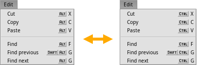

Русский
Русский Deutsch
Deutsch English
EnglishОпциональная клавиша
Панель настроек Раскладка позволяют вам переключиться со стандартной для Haiku клавиши ALT на CTRL (режим Windows/Linux). Это - глобальное переключение, поэтому, к примеру, выход из приложения в командной строке будет выполняться при помощи ALT C вместо обычного CTRL C.
Эта несогласованность является одной из причин, из-за которых клавиша ALT является опциональной в Haiku по умолчанию.
